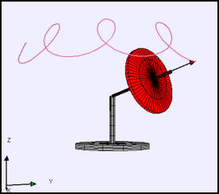

The gyroscope path shows precession and nutation.
The Gyroscope example computes and displays the dynamics of gyroscope under the influence of a gravitational torque acting on the center of mass. The gyroscope is supported at one end and given an initial angular velocity component about its axis of symmetry and a component perpendicular to its axis of symmetry. The numerical solution shows the motion for all initial conditions including zero initial angular momentum. The model is designed to show the cycloidal motion (precession and nutation) of the gyroscope axle when the initial angular velocity is large. Users can very the position and radius of the spinning mass as well as the initial angle and can display the angular momentum L, angular velocity ω, and torque N vectors. A second window shows the elevation angle of the axle and the angular momentum vector.
Units are chosen such that the total mass M and the acceleration of gravity g are one. The rotor is an ellipsoid with a uniform mass distribution and with major axes 2*R and minor axis R/5. The ellipsoid's moment of inertia through the center of mass is 4MR2/5 about the major axes and 26MR2/125 about the minor axis.
The following EJS models are described in Chapter 17 of the EJS adaptation of An Introduction to Computer Simulation Methods available in the ComPADRE digital library.
R. Feynman, R. Leighton, and M. Sands, The Feynman Lectures in Physics vol 1, p20-5 to 20-8, Addison-Wesley (1963)
Svilen Kostov, "It has to Go Down a Little, In Order to Go Around-- Revisiting Feynman on the Gyroscope," The Physics Teacher, (in press).
Herbert Goldstein, Charles P. Poole, and John L. Safko, Classical Mechanics, third edition, Addison-Wesley (2002). Chapter 4 discusses the kinematics of rigid body motion.
Dennis C. Rapaport, The Art of Molecular Dynamics Simulation, second edition, Cambridge University Press (2004). Chapter 8 discusses the molecular dynamics of rigid molecules using quaternions.
Harvey Gould, Jan Tobochnik, and Wolfgang Christian, An Introduction to Computer Simulation Methods, third edition, Addison Wesley (2007). Chapter 17 describes the quaternion-based numerical algorithm used in this model.
The Gyroscope example was developed by Wolfgang Christian using the Easy Java Simulations (EJS) modeling tool version 4.3. You can examine and modify the model for this simulation if you have EJS installed by right-clicking within the program and selecting "Open Ejs Model" from the pop-up menu.
Information about EJS is available at: <http://www.um.es/fem/Ejs/> and in the OSP ComPADRE collection <http://www.compadre.org/OSP/>.